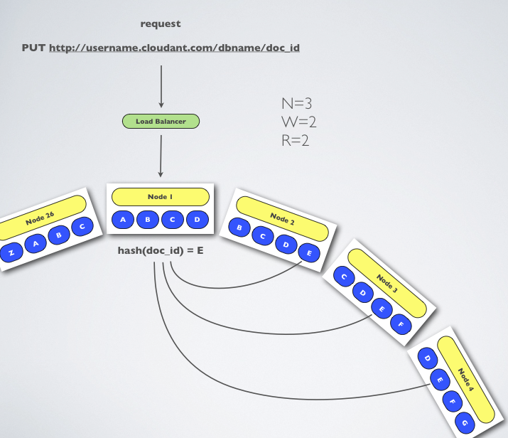

Dynamo and CouchDB Clusters
(This is a republication of a Blog article by Brad Anderson:
"Dynamo and CouchDB Clusters",
originally published August 13, 2010.)
For a while, CouchDB was described as a "distributed, fault-tolerant and schema-free document-oriented database accessible via a RESTful HTTP/JSON API." The story about CouchDB's 'distributed' description has always involved its
multi-master replication. In this sense, it is not truly a horizontally scalable database, as noted here  .
With the availability of Cloudant's new
hosted service , a new option has entered the scene. Our clustering is similar to Voldemort ,
Cassandra , or Riak ,
as it implements a version of
Amazon's Dynamo . We'd like to tell you a bit about how
it works.
.
With the availability of Cloudant's new
hosted service , a new option has entered the scene. Our clustering is similar to Voldemort ,
Cassandra , or Riak ,
as it implements a version of
Amazon's Dynamo . We'd like to tell you a bit about how
it works.

Clustering in a Ring
Cloudant makes use of partitions for sharding data. Picture a ring of partitions that each are responsible for a range of the data. The partitions, sometimes referred to as virtual nodes or vnodes, are placed on separate physical nodes as the primary
means of distribution. Partitioning databases is nothing new, and with Dynamo systems, a keyspace is usually employed. We use CRC32, so from 0 to 2^32. We've seen MD5, fnv, and SHA-1 used, and previous versions of our software used SHA-1. When
creating a database, users may provide Q, a constant that determines how many partitions the database will be spread across. Let's check out an example:
curl -X PUT http://username.cloudant.com/dbname?q=10
For a Q of 10, there will be 10 partitions put across all the nodes in the cluster. Each partition will be responsible for a range of 2^32/Q keys.
Any Node can Handle a Request
Each request to the cluster will most likely go through a round-robin load balancer, because each of the nodes knows how to find the data in O(1) lookup time. To do this, the document id is hashed, and the resulting hash is compared against the database's
partition map, as we discussed above. If you're referring to the shiny picture on this page, you will see that our example hashes 'doc_id' to the E partition. In reality, this could be something like hashing a value to c34b and that falls
between c000 and cfff hex values, so we call that range the E partition. The partition map for that database knows which node or nodes have copies of the document, and requests are routed via distributed Erlang messages to those nodes.
Quorum system (N, R, W)
The durability and consistency settings of Dynamo systems are governed by quorum constants. As you can see from the diagram, N=3. This means that three replica copies of 'doc_id' document will be stored in the cluster. When the 'write'
arrives at Node 1 and the consistent hashing algorithm tells us the doc will live on the E partition, the system attempts three asynchronous writes, one to each of the nodes that house the E partition replicas. You can be reasonably certain of the
writes succeeding, because the request will wait for W (in this case, W=2) responses. When two successful responses return to Node 1, the response of 201 Created is returned to the client. The same thing occurs on 'reads.' When a GET request
arrives at a node, N 'read' requests go out to the nodes which house that document's partition. If R=2, then the system waits for two agreed-upon values to be returned, and then replies to the client with a 200 OK and the document's
contents.
You can set the defaults of N, R, and W for your cluster, but you may also override them at request time. N may be overridden at database creation time, just like Q above. R and W may be overridden for each request individually. A higher W value means
more durable writes, where lower W value means more write throughput. High R values mean consistent values returned, while low R values mean first read wins, and higher read throughput.
Masterless (no SPOF)
Server failure is handled transparently. The load balancer will not route requests to a downed node. With consistent hashing, the other nodes are capable of serving requests. Also, when a node is down, other partitions will provide the data that is
located on the downed node. If N=3, W=2, R=2 as in our example, a node may be down but read and write quorums are still satisfied. When the node returns, operations return to normal. The node is placed back into service by the load balancer, and a
'hinted-handoff-like' system is used to replicate the writes that the downed node may have missed. The other nodes holding data for the partitions of the downed node replicate the updates continuously after the node returns.
Horizontally Scalable
When the cluster gets closer to capacity, or could use more nodes to crunch data in a more parallel fashion, extra nodes may be added to the cluster. When this happens, partitions are moved from existing nodes to the new nodes. The system has the flexibility
to move partitions on a database level, and can split large partitions if required. This is an evolving portion of the code base, and we are attempting to do partition merging and splitting all while the database remains online, i.e. other partitions
serve data while the work is being done.
Above, there was mention of partition merging. This may be required as the cluster shrinks. Or, it is also possible to re-partition an over-partitioned database into fewer shards. The flexibility exists to shrink a cluster by removing nodes, just as
it may be grown, providing a truly elastic data store.
Transparent to the application
All of these features - distributed, horizontally scalable, durable, consistent - happen with little or no change required in applications that have been written for CouchDB. A cluster looks just like a stand-alone CouchDB, and API compliance has been
our goal from the beginning. Granted, there are a few extra options like overriding quorum constant defaults and there are a few vagaries, like views always performing rereduce due to the views being distributed. But on the whole, the extras in Cloudant
are transparent to the application.